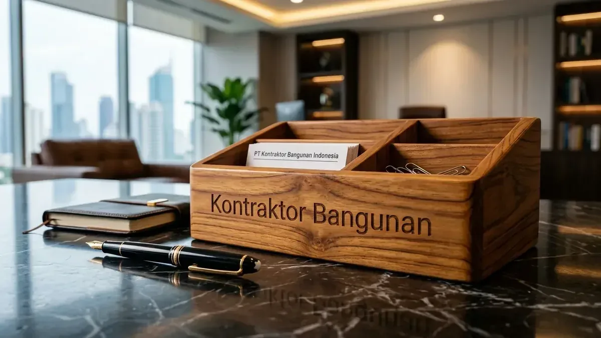

1. Tabel Komparasi Teknis: Spandek Zincalume vs UPVC Alderon
| Parameter Evaluasi | Atap Spandek Zincalume (0,40 mm) | Atap UPVC Alderon Twinwall (10 mm) |
|---|---|---|
| Material Dasar | Baja Lapis Aluminium-Seng (55% Al, 43.5% Zn) | Polimer UPVC Anti-UV Berkualitas Tinggi |
| Insulasi Suhu Panas | Sangat Panas (Wajib tambah insulasi foil) | Sangat Sejuk (Rongga udara penahan panas) |
| Insulasi Kebisingan Hujan | Sangat Bising (75 – 85 dB) | Kedap Suara Hujan (Peredaman s/d 28 dB) |
| Ketahanan Karat / Asam | Rentan karat tepi potongan & uap asam | 100% Anti Karat, Anti Asam, Tahan Garam |
| Garansi Pabrik | 5 – 10 Tahun | 10 – 15 Tahun Penuh Garansi |
| Estimasi Biaya Material/m² | Rp 75.000 – Rp 115.000 / m² | Rp 195.000 – Rp 260.000 / m² |
2. Rekomendasi Pemilihan Atap Sesuai Karakteristik Pabrik
- Pilih UPVC Alderon Jika: Pabrik pupuk/kimia, peternakan unggas (uap amonia tinggi), pergudangan tepi pantai bergaram tinggi.
- Pilih Spandek + Bubble Foil Jika: Gudang logistik umum, bengkel otomotif, depo kargo beranggaran efisien dengan bentang atap sangat luas.

Pemasangan insulasi aluminium bubble foil dan wiremesh penahan panas atap.
Pertanyaan yang Sering Diajukan (FAQ)
Karet seal sekrup konvensional yang getas terkena panas matahari membiarkan air rembes. Gunakan sekrup dengan ring karet EPDM anti-UV bertutup pelindung.
Tidak, UPVC memiliki sifat self-extinguishing (memadamkan api sendiri saat sumber api menjauh) dan berstandar Class 1 Fire Rated.
Kesimpulan Praktis
Perencanaan konstruksi yang terperinci dan didukung oleh dokumen teknis presisi adalah kunci utama keberhasilan pembangunan yang bebas risiko overbudget dan deviasi struktur. Menyerahkan proyek kepada tim profesional memastikan kepatuhan standar hukum, mutu pengerjaan prima, dan efisiensi waktu pelaksanaan.
Ambil keputusan tepat sekarang juga untuk melindungi investasi bangunan Anda. Dapatkan rancangan arsitektur terbaik dan estimasi biaya transparan bersama tim Kontraktor Bangunan.